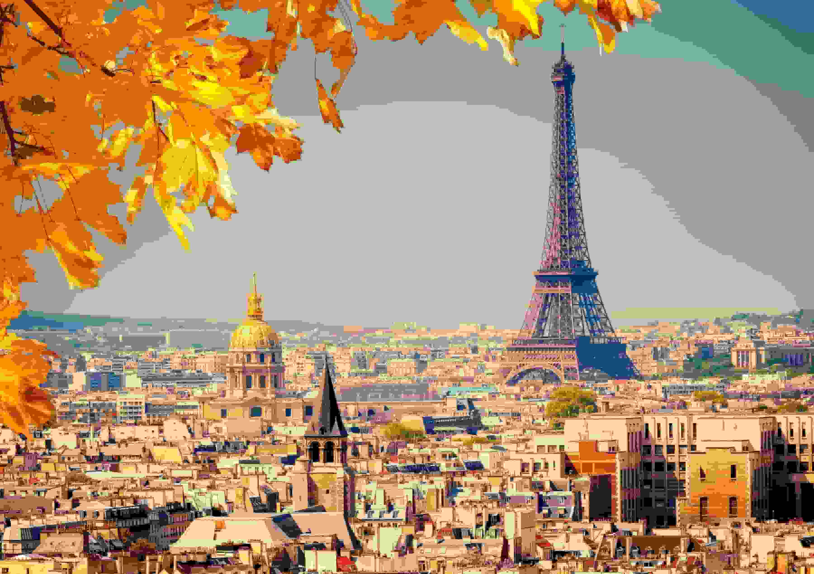

The reason I chose Paris as my favourtie city is because it is a place with a lot of history.
Besides the Eiffel Tower I was always really fascinated by experiencing the infrastructureand the culture in
Paris.
I also feel a sense of tranquility just existing in a moment of silence and looking at art, because for me
its almost like meditating.
I always wanted to attend fashion week in Paris because its such aa big event and it seems like quite the
experience.
Trying french cuisines in the country it originated it is also a big dream of mine. I truly believe that I
will be able to go to Paris, and it will be because of my music.